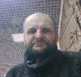

OLEG DOROZHKO
|

|
|
PersonalAge50
AddressPoltava, Ukraine
PhoneClick on image for copy - prevents spam  Click on image for copy - prevents spam Languages
|
ExperienceFreelancerJava development2025 - now
Some freelance tasksApril 2017 - now
CRM 1C Enterprise 7.7August 2001 - 2017
Skillsphp, javascript, java, mysql, node.js, apache, xampp, json, xml, git
EducationComputer engenering, Dnepropetrovsk State University, Faculty of Physics, Electronics and Computer Systems Diploma: RDBMS, developing software for automation
|